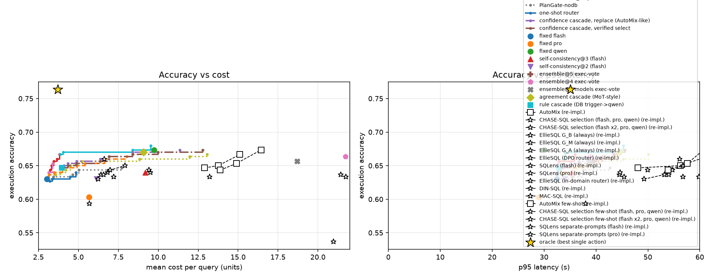

PlanGate: thí nghiệm sơ bộ về lập kế hoạch suy luận
dựa trên bằng chứng từ DBMS cho Text-to-SQL
Tháng 10, 2026
Tóm tắt
Báo cáo này tổng hợp các thí nghiệm đã thực hiện cho hướng PlanGate, tức là xem việc phục vụ Text-to-SQL bằng LLM như một bài toán lập kế hoạch tuần tự trên cả operator LLM lẫn operator DBMS. Thí nghiệm được thực hiện trên hai nhánh: 300 câu của BIRD dev trên SQLite và 500 câu của BIRD mini-dev trên PostgreSQL 16. Kết quả cho thấy (i) các probe rẻ trên DB mang nhiều thông tin cho việc ra quyết định hơn một lần gọi LLM bổ sung, trong khi độ trễ thấp hơn vài trăm lần; (ii) LLM khi chỉ đọc SQL để chọn giữa hai candidate cho kết quả không tốt hơn ngẫu nhiên, nhưng cải thiện rõ khi có bằng chứng thực thi; (iii) ước lượng chi phí của optimizer PostgreSQL tương quan rất chặt với thời gian thực thi thật (Spearman 0.962), nên có thể dùng để định giá bằng chứng trước khi thu thập. Planner đề xuất đạt accuracy cao hơn baseline tốt nhất từ 1.6 đến 3.8 điểm ở cùng mức chi phí trên phần lớn các mức ngân sách, và lợi thế này không còn khi bỏ quyền truy cập DB.
1 Thiết lập thí nghiệm
Candidate đầu tiên luôn được sinh bởi deepseek-v4-flash, là model rẻ nhất trong pool. Các action LLM gồm sinh lại cùng model ở temperature 0.8 (resample), sửa lỗi có kèm bằng chứng từ DB (repair), và chuyển sang deepseek-v4-pro hoặc qwen3.8-max. Các action phía DBMS gồm kiểm tra parse/bind, lấy query plan qua EXPLAIN, micro-probe kiểm tra giá trị literal có tồn tại trong cột hay không, thực thi có giới hạn thời gian (chỉ giữ hình dạng kết quả và fingerprint), sửa literal trực tiếp từ DB mà không gọi LLM (VALUE_FIX), và differential probe giữa hai candidate.
Chỉ số chính là execution accuracy (EX) của BIRD. Chi phí được tính bằng đơn vị token có trọng số theo giá từng model, cộng thêm thời gian DB. Mọi kết quả LLM đều được cache, nên tất cả các policy được so sánh trên cùng một tập outcome. Các mô hình học (bộ chấm, bộ chọn, hàm giá trị) đều được cross-fit theo câu hỏi, và khoảng tin cậy 95% được tính bằng paired bootstrap.
2 Dư địa tối ưu (oracle)
Trước khi xây planner, cần đo xem nếu biết trước cấu hình rẻ nhất cho ra đáp án đúng ở từng câu thì tiết kiệm được bao nhiêu. Bảng 1 cho thấy oracle đạt 0.757 với chi phí 3.47, trong khi cấu hình cố định tốt nhất (qwen) chỉ đạt 0.670 với chi phí 9.74. Đáng chú ý là accuracy không tăng theo chi phí: cấu hình đắt nhất (kimi kèm decomposition) lại cho kết quả thấp nhất. Chỉ khoảng 46% số câu được tất cả các cấu hình làm đúng.
| Cấu hình | EX | Chi phí / câu |
|---|---|---|
| flash, direct | 0.630 | 3.03 |
| pro, direct | 0.603 | 5.67 |
| glm, direct | 0.597 | 5.95 |
| pro, decompose | 0.607 | 6.52 |
| qwen, direct | 0.670 | 9.74 |
| kimi, decompose | 0.583 | 13.66 |
| oracle | 0.757 | 3.47 |
Bảng 1: Accuracy và chi phí của các cấu hình cố định so với oracle (SQLite, n = 300).
3 Giá trị của thông tin sau khi sinh SQL
Câu hỏi đầu tiên là liệu thông tin có được sau khi đã có SQL candidate có giúp dự đoán candidate đó đúng hay sai tốt hơn thông tin chỉ từ câu hỏi và schema hay không. Trạng thái được chia thành ba mức: P0 (câu hỏi và schema), P1 (thêm đặc trưng của SQL) và P2 (thêm bằng chứng từ DB). AUROC tăng đều từ 0.58 (P0) lên 0.64 (P1) và 0.72 (P2) trên candidate đầu tiên. Như vậy một router chỉ nhìn câu hỏi gần như không có khả năng phân biệt, và phần lớn tín hiệu xuất hiện sau khi sinh SQL.
3.1 Đóng góp của từng action
Bảng 2 tách riêng đóng góp của từng nguồn bằng chứng, tính theo mức tăng AUROC so với P1. Tổng hợp bốn probe DB tăng AUROC 0.080 trên SQLite và 0.060 trên PostgreSQL, với độ trễ median chỉ 20 ms và 8 ms. Một điểm đáng chú ý: nếu sinh thêm một sample LLM nhưng chỉ so sánh chuỗi SQL thì gần như không có thông tin gì (−0.004 và +0.004). Sample đó chỉ có ích khi được thực thi trên DB và so sánh kết quả. Nói cách khác, ngay cả tín hiệu "hỏi thêm LLM" thực chất cũng là tín hiệu từ DB.
| Nguồn bằng chứng | SQLite ΔAUROC | ms | PostgreSQL ΔAUROC | ms |
|---|---|---|---|---|
| Parse/bind | +0.010 | 1.7 | +0.022 | 2.1 |
| EXPLAIN | −0.002 | 2.1 | +0.011 | 0.6 |
| Value probe | +0.036 | 2.7 | +0.016 | 2.1 |
| Thực thi có giới hạn | +0.066 | 9.0 | +0.058 | 2.3 |
| Cả bốn probe DB | +0.080 | 20 | +0.060 | 8.4 |
| Thêm 1 sample LLM, so chuỗi SQL | −0.004 | 4399 | +0.004 | 4661 |
| Thêm 1 sample LLM, so kết quả thực thi | +0.046 | 4433 | +0.068 | 4662 |
| Candidate từ model khác, so kết quả thực thi | +0.042 | 3361 | +0.074 | 2951 |
Bảng 2: Mức tăng AUROC so với P1 khi dự đoán candidate đầu tiên có đúng hay không, kèm độ trễ median.
4 Action nào thực sự cứu được câu sai?
Với mỗi câu, xác định action rẻ nhất sau candidate đầu tiên cho ra đáp án đúng. Trên SQLite, 63% câu đã đúng ngay từ đầu, VALUE_FIX chỉ cứu được 1%, resample 6%, repair 2%, đổi model 4.7%, và 23% không action nào trong pool cứu được. Kết quả trên PostgreSQL tương tự (59%, 1%, 6%, 3%, 6% và 25%). Như vậy DB hiếm khi tự tạo ra đáp án đúng; giá trị chính của nó nằm ở chỗ cung cấp thông tin để quyết định bước tiếp theo.
Tuy nhiên, khi chia theo trạng thái mà DB quan sát được, bức tranh khác hẳn. Với những câu bị DB gắn cờ (lỗi parse, literal không tồn tại, kết quả rỗng hoặc toàn NULL), các action rẻ cứu được 50% số câu sai trên SQLite, và trên PostgreSQL thì repair có kèm bằng chứng là action tốt nhất (0.38). Ngược lại, với các câu không bị gắn cờ, action rẻ chỉ cứu được 18%, và chỉ việc chuyển sang model mạnh hơn mới thực sự có ích. Điều này gợi ý rằng action tối ưu phụ thuộc vào trạng thái, và trạng thái đó có thể quan sát được với chi phí rất thấp.
Hiệu quả trên mỗi giây của từng action cũng được so sánh trực tiếp. Ở vùng bị gắn cờ, VALUE_FIX cho mức tăng xác suất đúng trên mỗi giây cao hơn khoảng 45 lần so với action LLM tốt nhất. Ở vùng không gắn cờ nhưng còn bất định, việc thay candidate đầu tiên bằng một sample mới lại làm giảm accuracy 8.4 điểm. Từ quan sát này, mọi action thay thế đều phải được kiểm chứng trước khi được chấp nhận.
4.1 Có cần chạy mọi probe không?
Thí nghiệm tiếp theo dùng một gate học được, chỉ chạy probe nào được dự đoán là sẽ làm thay đổi quyết định. Trên SQLite, cách này giảm 81% thời gian DB trung bình (từ 102.6 ms xuống 19.0 ms mỗi câu) và 87% ở p95, trong khi accuracy gần như giữ nguyên (0.650 so với 0.657). Dù vậy, vì DB trên BIRD vốn đã rẻ so với một lần gọi LLM, tác động end-to-end của kết quả này còn nhỏ.
5 Bài toán chọn candidate
Phân tích kỹ hơn cho thấy nút thắt chính không nằm ở việc sinh candidate mà ở việc chọn. Nếu chọn đúng như oracle trong pool thì đạt 0.763, nhưng bỏ phiếu theo kết quả thực thi chỉ đạt 0.663. Để hiểu rõ hơn, LLM được dùng làm judge trên 155 cặp candidate mà đúng một bên đúng, mỗi cặp được hỏi theo cả hai thứ tự để loại bỏ thiên lệch vị trí.
| Judge | Chỉ SQL | + xem trước kết quả | + differential probe |
|---|---|---|---|
| deepseek-v4-flash | 0.465 | 0.523 | 0.577 |
| deepseek-v4-pro | 0.429 | 0.577 | 0.590 |
Bảng 3: Accuracy của judge khi chọn giữa hai candidate có kết quả khác nhau (n = 155 cặp).
Khi chỉ đọc SQL, cả hai judge đều không tốt hơn ngẫu nhiên; với deepseek-v4-pro, cận trên của khoảng tin cậy là 0.497, tức thấp hơn 0.5 một cách có ý nghĩa. Khi có thêm bằng chứng thực thi, accuracy tăng 11 đến 16 điểm. Differential probe (để DB tính các dòng chỉ xuất hiện ở một trong hai kết quả) giúp judge rẻ thêm 5.5 điểm so với chỉ xem trước kết quả (CI [+0.3, +10.6]), đến mức flash có differential probe ngang với pro chỉ xem trước kết quả. Với judge mạnh hơn thì hai cách cho kết quả tương đương.
6 Optimizer như một mô hình chi phí cho bằng chứng
Trên PostgreSQL, thí nghiệm kiểm tra xem ước lượng chi phí từ EXPLAIN có dự đoán được thời gian thực thi của candidate hay không. Trên 2446 candidate, tương quan Spearman giữa hai đại lượng là 0.962. Ước lượng này phân biệt được các truy vấn chạy quá 100 ms với AUROC 0.924, và quá 500 ms với AUROC 0.999, trong khi bản thân EXPLAIN chỉ tốn khoảng 0.6 ms. Thời gian thực thi có phân phối đuôi dài: 5% candidate chậm nhất chiếm 34% tổng thời gian.
Dựa trên quan sát đó, một policy được thử nghiệm: chỉ thực thi candidate khi ước lượng chi phí không vượt quá phân vị 95. Policy này giữ nguyên AUROC (0.759 so với 0.758 khi luôn thực thi), giảm 21% thời gian DB trung bình và 42% thời gian tối đa, và tốt hơn việc bỏ qua ngẫu nhiên ở cùng tỉ lệ thực thi.
7 Planner có ngân sách
Planner cuối cùng giữ trạng thái là tập các candidate đã có cùng bằng chứng DB của chúng. Đáp án được chọn bởi một mô hình pairwise trên các cụm candidate có cùng kết quả thực thi. Policy gồm hai pha: trước tiên thực hiện tối đa hai action rẻ được chọn bởi hàm giá trị học được, sau đó chỉ chuyển sang model mạnh nếu giá trị ước lượng của trạng thái còn dưới một ngưỡng. Planner được so sánh với baseline ngoài tốt nhất ở cùng mức chi phí, gồm model cố định, router một bước, cascade theo luật, cascade theo độ khớp kiểu MoT, self-consistency, và ensemble 3 đến 5 candidate bỏ phiếu theo kết quả thực thi.
| Ngân sách | SQLite | Baseline | Δ [CI 95%] | PostgreSQL | Baseline | Δ [CI 95%] |
|---|---|---|---|---|---|---|
| 1.25× | 0.660 | 0.630 | +3.0 [+1.0, +5.3] | 0.622 | 0.604 | +1.8 [+0.0, +3.6] |
| 1.5× | 0.670 | 0.647 | +2.3 [+0.7, +4.3] | 0.628 | 0.612 | +1.6 [+0.2, +3.2] |
| 2× | 0.670 | 0.647 | +2.3 [+0.3, +4.3] | 0.648 | 0.618 | +3.0 [+0.4, +5.6] |
| 3× | 0.673 | 0.670 | +0.3 | 0.670 | 0.632 | +3.8 [+1.2, +6.4] |
| 4× | 0.680 | 0.673 | +0.7 | 0.676 | 0.642 | +3.4 [+1.0, +5.8] |
Bảng 4: Accuracy của planner so với baseline ngoài tốt nhất ở cùng ngân sách (bội số chi phí của model rẻ nhất).
Planner cho kết quả tốt hơn ở hầu hết các mức ngân sách, với khác biệt có ý nghĩa thống kê ở mức thấp trên SQLite và ở hầu hết các mức trên PostgreSQL. Trên PostgreSQL, planner đạt 0.676, cao hơn qwen dùng riêng (0.640) trong khi chi phí thấp hơn. Vì planner có nhiều tham số để chỉnh hơn baseline, kết quả được kiểm tra thêm bằng cách chọn điểm vận hành trên một nửa số câu và đánh giá trên nửa còn lại. Kết quả vẫn giữ được: +3.3 điểm trên SQLite ở mức 1.25 đến 2×, và +4.2 điểm (CI [+1.6, +6.8]) trên PostgreSQL ở mức 3×.
Nếu xét theo hướng ngược lại, tức là chi phí cần để đạt cùng accuracy với từng baseline, thì planner rẻ hơn ensemble 3 đến 5 candidate khoảng 76 đến 86% và có p95 latency thấp hơn 13 đến 44%. So với self-consistency, chi phí giảm 49 đến 66%. Trên PostgreSQL, để đạt bằng accuracy của qwen, planner chỉ cần 53% chi phí và có p95 latency thấp hơn 27%. Trên SQLite thì ngược lại, p95 latency tăng 48% do các bước được chạy tuần tự.
Khi bỏ quyền truy cập DB và chỉ dùng độ khớp chuỗi SQL, cùng planner đó đạt 0.637 đến 0.657 trên SQLite và 0.624 / 0.656 trên PostgreSQL ở mức 2× và 4×, thấp hơn rõ so với phiên bản đầy đủ (0.660 đến 0.670, và 0.648 / 0.676). Thay bộ chọn pairwise bằng bộ chọn pointwise cũng làm accuracy tối đa giảm xuống 0.653 trên SQLite và 0.640 trên PostgreSQL.
7.1 So sánh với phương pháp đã công bố
Hai phương pháp đại diện được cài đặt lại trong cùng setting, dùng chung cache candidate và cách tính chi phí. AutoMix (Aggarwal et al., NeurIPS 2024) để model nhỏ tự kiểm chứng câu trả lời ba lần mà không thực thi, rồi chuyển sang model lớn nếu độ tin cậy thấp hơn ngưỡng θ. CHASE-SQL (Pourreza et al., ICLR 2025) gom các candidate theo kết quả thực thi và dùng một selection agent so sánh từng cặp dựa trên kết quả thực thi. Hai điểm khác bản gốc là prompt kiểm chứng của AutoMix ở dạng zero-shot, và selector của CHASE-SQL là deepseek-v4-pro không fine-tune với pool generator hiện có.
| Phương pháp | SQLite EX | Chi phí | p95 (s) | PG EX | Chi phí | p95 (s) |
|---|---|---|---|---|---|---|
| AutoMix, θ = 0.3 | 0.647 | 12.91 | 48.1 | 0.602 | 12.72 | 42.9 |
| AutoMix, θ = 0.6 | 0.650 | 13.76 | 56.2 | 0.614 | 13.68 | 49.6 |
| AutoMix, θ = 0.9 | 0.667 | 15.11 | 62.6 | 0.632 | 14.99 | 54.1 |
| CHASE-SQL (flash, pro, qwen) | 0.637 | 21.42 | 44.5 | 0.620 | 21.46 | 43.3 |
| CHASE-SQL (flash×2, pro, qwen) | 0.637 | 25.57 | 54.0 | 0.624 | 26.02 | 46.5 |
| PlanGate (điểm tốt nhất) | 0.680 | 9.52 | 45.3 | 0.676 | 11.09 | 32.3 |
Bảng 5: So sánh với AutoMix và CHASE-SQL (cài đặt lại trong cùng setting).
Phương pháp thứ ba là EllieSQL (Zhu et al., 2025), một framework Text-to-SQL tiết kiệm chi phí dựa trên router theo độ phức tạp. Bản cài lại bám sát code công bố: prompt của schema linking và ba pipeline (G_B sinh trực tiếp; G_M divide-and-conquer kèm refiner dựa trên thực thi; G_A thêm ví dụ tổng hợp online) được giữ nguyên văn, và router là checkpoint Qwen2.5-0.5B DPO gốc với đúng định dạng input. Khác biệt duy nhất là backbone deepseek-v4-flash thay cho gpt-4o-mini. Vì router được train trên BIRD SQLite, EllieSQL chỉ được chạy trên nhánh SQLite. Phân bố route (53% G_B, 11% G_M, 36% G_A) khớp với tỉ lệ nhãn lúc train trong paper, cho thấy bản cài lại hoạt động đúng.
| Policy | EX | Chi phí | p95 (s) | Số lần gọi LLM |
|---|---|---|---|---|
| EllieSQL G_B (luôn dùng) | 0.593 | 5.68 | 38.0 | 2.00 |
| EllieSQL G_M (luôn dùng) | 0.640 | 6.83 | 44.6 | 2.01 |
| EllieSQL G_A (luôn dùng) | 0.640 | 9.52 | 65.3 | 3.02 |
| EllieSQL + router DPO | 0.633 | 7.21 | 56.8 | 2.37 |
| EllieSQL + router oracle | 0.700 | 5.91 | 41.8 | 2.04 |
| PlanGate | 0.670 | 4.06 | 34.1 | 1.19 |
Bảng 6: So sánh với EllieSQL trên SQLite (n = 300).
Router DPO giảm 24% chi phí so với luôn dùng G_A và chỉ mất 0.7 điểm, giống xu hướng paper báo cáo. Tuy vậy, PlanGate đạt 0.670 với chi phí 4.06, cao hơn router DPO 3.7 điểm (CI [−0.7, +8.0]) trong khi chi phí thấp hơn khoảng 44% và p95 latency thấp hơn 43%. Khác biệt accuracy chưa có ý nghĩa thống kê ở n = 300, nhưng khác biệt chi phí thì rõ. Khi phân tích riêng router, khả năng dự đoán pipeline cơ bản sẽ sai chỉ đạt AUROC 0.613, tương đương router dựa trên câu hỏi (0.58) và thấp hơn bằng chứng DB sau khi sinh SQL (0.715). Router oracle đạt 0.700 với chi phí 5.91, nghĩa là dư địa của EllieSQL có thật nhưng một quyết định đưa ra trước khi sinh SQL không khai thác được.
Phương pháp thứ tư là SQLens (Gong et al., NeurIPS 2025), phương pháp gần nhất về ý tưởng vì cũng dùng tín hiệu từ DB để phát hiện và sửa lỗi ngữ nghĩa. Bản cài lại theo mô tả trong paper gồm 9 tín hiệu từ DB, 5 tín hiệu từ LLM (gộp trong một lần gọi), một label model sinh huấn luyện không cần nhãn để gộp tín hiệu, và vòng sửa gồm Error Selector, Error Fixer và SQL Auditor (tối đa 2 vòng). SQL gốc là candidate của flash, giống PlanGate; LLM dùng cho các bước của SQLens là flash hoặc pro.
| SQLens (flash) | SQLens (pro) | PlanGate | |
|---|---|---|---|
| AUROC phát hiện lỗi | 0.666 | 0.646 | ≈0.72 |
| Tỉ lệ bị gắn cờ | 9.0% | 7.3% | — |
| EX cuối | 0.643 | 0.633 | 0.670–0.680 |
| Chi phí | 9.43 | 13.22 | 4.06–9.52 |
| p95 latency (s) | 72.8 | 59.8 | 34.1–45.3 |
Bảng 7: So sánh với SQLens trên SQLite (n = 300).
Ở mức chi phí không vượt SQLens, PlanGate cao hơn 3.0 điểm so với bản flash (CI [+0.0, +6.0]) và 4.7 điểm so với bản pro (CI [+1.7, +7.7]). Để đạt cùng accuracy, PlanGate cần ít hơn 66 đến 76% chi phí và có p95 latency thấp hơn 46 đến 55%. Khác biệt chính nằm ở cách dùng DB. SQLens chạy toàn bộ bộ tín hiệu cố định trên mọi truy vấn: riêng các tín hiệu phải quét dữ liệu đã khiến p95 thời gian DB lên tới 8.6 s, trong khi từng tín hiệu riêng lẻ chỉ có AUROC từ 0.50 đến 0.60. PlanGate chọn bằng chứng theo trạng thái và dùng kết quả thực thi để chọn giữa các candidate. Bộ phát hiện của SQLens chỉ gắn cờ 7 đến 9% số câu với recall khoảng 15%, nên phần sửa lỗi chỉ thêm khoảng 1 điểm so với flash gốc. Paper gốc báo mức tăng lớn hơn khi sửa cho các hệ thống nền yếu hơn, nên kết quả này phụ thuộc vào chất lượng SQL đầu vào.
Bước tự kiểm chứng của AutoMix chỉ đạt AUROC 0.624 trên SQLite và 0.651 trên PostgreSQL, thấp hơn bộ chấm dùng bằng chứng DB (0.715). Ba lần kiểm chứng, mỗi lần chứa toàn bộ schema, khiến chi phí của AutoMix gấp khoảng 4 đến 5 lần flash, trong khi accuracy không vượt qwen. CHASE-SQL với selector không fine-tune đạt 0.637 và 0.620, thấp hơn ensemble bỏ phiếu theo thực thi, phù hợp với kết quả ở mục 5 rằng judge LLM gặp khó ở các cặp flash–qwen. Để đạt cùng accuracy với hai phương pháp này, PlanGate cần ít hơn 69 đến 88% chi phí và có p95 latency thấp hơn 27 đến 72%. Cần lưu ý đây là bản cài đặt lại, nên kết quả nhiều khả năng đánh giá thấp CHASE-SQL bản gốc với selector đã fine-tune.


8 Hạn chế và hướng tiếp theo
Mức cải thiện hiện tại khoảng 2 đến 4 điểm, có ý nghĩa thống kê ở phần lớn ngân sách nhưng chưa lớn, trong khi oracle (khoảng 0.75) cho thấy vẫn còn nhiều dư địa. Các confidence cascade trong thí nghiệm dùng lại bộ chấm và bộ chọn của chính planner, nên chỉ được xem như ablation chứ chưa phải baseline độc lập; AutoMix, CHASE-SQL, EllieSQL và SQLens mới được cài đặt lại trong cùng setting (mục 7.1), trong đó EllieSQL và SQLens chỉ chạy trên SQLite; PRISM vẫn chưa được so sánh. Chi phí DB trên BIRD còn nhỏ, nên kết quả về việc optimizer định giá bằng chứng cần được kiểm tra lại trên dữ liệu được scale lên 10 đến 100 lần và dưới tải đồng thời. Khoảng 23 đến 25% số câu không action nào cứu được, và một phần trong đó có thể đến từ nhãn bị nhiễu của BIRD. Cuối cùng, mỗi cấu hình mới chỉ được chạy một lần, và proxy API chèn thêm token vào mỗi lần gọi nên tỉ lệ chi phí giữa các model bị nén lại.
Các bước tiếp theo dự kiến gồm: đưa judge có differential probe vào planner như một action riêng để nhắm vào khoảng cách ở khâu chọn; chạy nhánh PostgreSQL trên dữ liệu đã scale; chạy các baseline ngoài một cách đầy đủ; và đánh giá cuối cùng trên toàn bộ 1534 câu của BIRD dev.